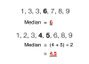

median

Definition: In statistics and probability theory, the median is the value separating the higher half from the lower half of a data sample, a population, or a probability distribution. For a data set, it may be thought of as "the middle" value. The basic feature of the median in describing data compared to the mean (often simply described as the "average") is that it is not skewed by a small proportion of extremely large or small values, and therefore provides a better representation of the center. Median income, for example, may be a better way to describe center of the income distribution because increases in the largest incomes alone have no effect on median. For this reason, the median is of central importance in robust statistics.
Source: Wikipedia
Wikipedia Page
Wikidata Page